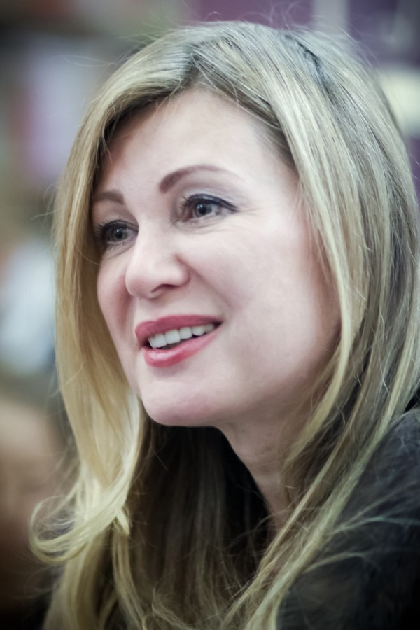

Person profile · РОЙ.МАРКЕТ investigation
At a glance
Family ties
Sanctions & screening
Ukraine (NSDC decision 726/2022; NABC sanctions tracker) — Ukrainian listing 19.10.2022, in force to 19.10.2027 per the OpenSanctions record ([s8524]); grounds per the NABC «Война и санкции» portal ([s8523]): «Поддержала военное вторжение россии в Украину в публичных заявлениях». DOB 28.10.1963 and Хабаровск match the other sources. The primary NSDC decree text is not on file; this rests on two secondary mirrors, so treat it as unverified until it is opened. [s8524]
Latvia (entry ban, March 2022) — Per the Russian Wikipedia article ([s8538]), which cites Радио Свобода; the Latvian primary list is not on file. [s8538]
Sources cited in this profile
| ID | Type | Locator | Captured | As of |
|---|---|---|---|---|
| s8524 | OpenSanctions screening record | OpenSanctions screening record (OPENSANCTIONS_20230701_NK-BranswJUNHxoMyFCGVdjSg_vika-tsyganova_wayback.html) | 2023-07-01 | — |
| s8537 | Wiki | Wiki (WIKI_20260930_tsyganov-vadim-borisovich.html) | 2026-09-30 | — |
| s8538 | Wiki | Wiki (WIKI_20260930_tsyganova-vika.html) | 2026-09-30 | — |
Generated from this investigation's registry (data/registry/) by scripts/build_person_profile.py. Not a substitute for reading the underlying primary sources listed above.